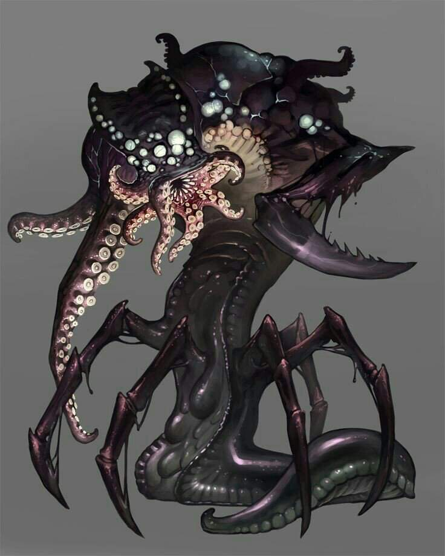

ABERRAÇÕES
Aberrações são seres profundamente alienígenas. Muitas delas possuem habilidades mágicas inatas
que vem da mente alienígena da criaturas e não das formas místicas do mundo. As aberrações
quintessenciais são os aboletes, devoradores de mentes, observadores e slaads.
╬╬═════════❮◆❯═════════╬╬
══════⊹⊱❖⊰⊹══════
╬╬═════════❮◆❯═════════╬╬
BESTAS
Bestas são criaturas não-humanoides que fazem parte da natureza da ecologia fantástica. Algumas
delas possuem poderes mágicos, mas a maioria não possuem inteligência e carecem de qualquer
sociedade ou idioma. As bestas incluem todas as variedades de animais ordinários, dinossauros e
versões gigantes de animais.
╬╬═════════❮◆❯═════════╬╬
══════⊹⊱❖⊰⊹══════
╬╬═════════❮◆❯═════════╬╬
Celestiais
Celestiais são criaturas nativas dos Planos Superiores. Muitos deles são servos de divindades,
contratados como mensageiros ou agentes no reino mortal e em todos os planos. Os celestiais são
bons por natureza, portanto, o celestial excepcional que extravia-se da tendência boa são
terríveis raridades. Os celestiais incluem anjos, couatls e pégasos.
╬╬═════════❮◆❯═════════╬╬
══════⊹⊱❖⊰⊹══════
╬╬═════════❮◆❯═════════╬╬
Constructos
Constructos são construídos, não nascidos. Alguns são programados por seus criadores para
seguirem um conjunto de instruções simples, enquanto outros são imbuídos de senciência e
capacidade de pensamento independente. Os golens são os constructos icônicos. Muitas criaturas
nativas do plano exterior de Mecânus, como os modrons, são constructos moldados a partir da
matéria-prima do plano pela vontade de criaturas mais poderosas.
╬╬═════════❮◆❯═════════╬╬
══════⊹⊱❖⊰⊹══════
╬╬═════════❮◆❯═════════╬╬
Corruptores
Corruptores são criaturas de perversidade que são nativas dos Planos Inferiores. Alguns são
servos de divindades, mas a maioria trabalham sob a liderança de arquidiabos e príncipes
demônios. Sacerdotes e magos malignos, às vezes, invocam corruptores para o mundo material para
fazer seus pactos. Se um celestial maligno é raro, um corruptor bom é ainda mais incomum. Os
corruptores incluem demônios, diabos, cães infernais, rakshasas e yugoloths.
╬╬═════════❮◆❯═════════╬╬
══════⊹⊱❖⊰⊹══════
╬╬═════════❮◆❯═════════╬╬
DRACONICOS
Dragões são criaturas reptilianas grandes de origem antiga e poderes absurdos. Dragões
verdadeiros, incluindo os dragões metálicos bons e os dragões cromáticos maus, são altamente
inteligentes e possuem magia inata. Também estão nessa categoria criaturas remotamente
relacionadas com os dragões verdadeiros, porém, menos poderosas, menos inteligentes e menos
mágicas, como os wyverns e os pseudodragões.
╬╬═════════❮◆❯═════════╬╬
══════⊹⊱❖⊰⊹══════
╬╬═════════❮◆❯═════════╬╬
Elementais
Elementais são criaturas nativas dos planos elementais. Algumas criaturas deste tipo são não
mais que apenas massas animadas dos seus respectivos elementos, incluindo as criaturas chamadas
simplesmente de elementais. Outras possuem formas biológicas infundidas com energia elemental.
As raças de gênios, incluindo os djinn e efreet, formam as civilizações mais importantes dos
planos elementais. Outras criaturas elementais incluem os azers, caçadores invisíveis e anomalia
da água.
╬╬═════════❮◆❯═════════╬╬
══════⊹⊱❖⊰⊹══════
╬╬═════════❮◆❯═════════╬╬
FADAS
Fadas são criaturas mágicas intimamente ligadas as forças da natureza. Elas habitam bosques
crepusculares e florestas nebulosas. Em alguns mundos, elas são intimamente ligadas à Faéria,
também chamada de Plano das Fadas. Algumas também são encontradas nos Planos Exteriores,
particularmente nos planos de Arbórea e nas Terras Selvagens. As fadas incluem dríades, pixies e
sátiros.
╬╬═════════❮◆❯═════════╬╬
══════⊹⊱❖⊰⊹══════
╬╬═════════❮◆❯═════════╬╬
Gigantes
Gigantes são uma espécie similar a humanos extremamente altos. Eles são humanoides no formato,
apesar de alguns terem múltiplas cabeças (ettins) ou deformações (fomoris). As seis variações de
gigantes verdadeiros são os gigantes da colina, gigantes de pedra, gigantes do gelo, gigantes do
fogo, gigantes das nuvens e gigantes da tempestade. Além desses, criaturas como ogros e trolls
também são gigantes.
╬╬═════════❮◆❯═════════╬╬
══════⊹⊱❖⊰⊹══════
╬╬═════════❮◆❯═════════╬╬
Humanoides
Humanoides são o povo padrão do mundo de D&D, tanto civilizado quanto selvagem, incluindo
humanos e uma variedade tremenda de outras espécies. Eles possuem idioma e cultura, alguns
poucos algumas habilidades mágicas inatas (apesar de a maioria dos humanoides ser capaz de
aprender a conjurar) e uma forma bípede. As raças de humanoides mais comuns são as mais
adequadas para serem personagens de jogador: humanos, anões, elfos e halflings. Quase tão
numerosos, mas muito mais selvagens e brutais e, em sua maioria uniformemente malignos, são as
raças de goblinoides (goblins, hobgoblins e bugbears), orcs, gnolls, povo lagarto e kobolds.
╬╬═════════❮◆❯═════════╬╬
══════⊹⊱❖⊰⊹══════
╬╬═════════❮◆❯═════════╬╬
Limos
Limos são criaturas gelatinosas que raramente possuem uma forma fixa. Eles são na maioria
subterrâneos, habitando em cavernas e masmorras e se alimentando de restos, carniça ou criaturas
azaradas o suficiente para ficarem em seus caminhos. Pudins negros e cubos gelatinosos estão
dentre os limos mais reconhecíveis.
╬╬═════════❮◆❯═════════╬╬
══════⊹⊱❖⊰⊹══════
╬╬═════════❮◆❯═════════╬╬
Monstruosidade
Monstruosidades são monstros no estrito senso – criaturas apavorantes que não são comuns, nem
verdadeiramente naturais e quase nunca benignos. Alguns são resultado de experimentos mágicos
que deram errado (como os ursos-coruja) e outros são produto de maldições terríveis (incluindo
os minotauros e yuan-ti). Eles desafiam a categorização e, de certa forma, servem como categoria
base para criaturas que não se encaixam em qualquer outro tipo.
╬╬═════════❮◆❯═════════╬╬
══════⊹⊱❖⊰⊹══════
╬╬═════════❮◆❯═════════╬╬
Mortos-Vivos
Mortos-vivos foram uma vez criaturas vivas levados a um estado horrendo de morte-vida através da
pratica de magia necromântica ou alguma maldição profana. Os mortos-vivos incluem corpos
ambulantes, como vampiros e zumbis, assim como espíritos desencarnados, como fantasmas e
espectros.
╬╬═════════❮◆❯═════════╬╬
══════⊹⊱❖⊰⊹══════
╬╬═════════❮◆❯═════════╬╬
Plantas
Plantas, no contexto, são criaturas vegetais, não flora ordinária. Muitas delas são ambulantes e
algumas são carnívoras. As plantas quintessenciais são o arbusto errante e a ente. Criaturas
fúngicas como o esporo de gás e o miconide também fazem parte dessa categoria.
╬╬═════════❮◆❯═════════╬╬
══════⊹⊱❖⊰⊹══════
╬╬═════════❮◆❯═════════╬╬